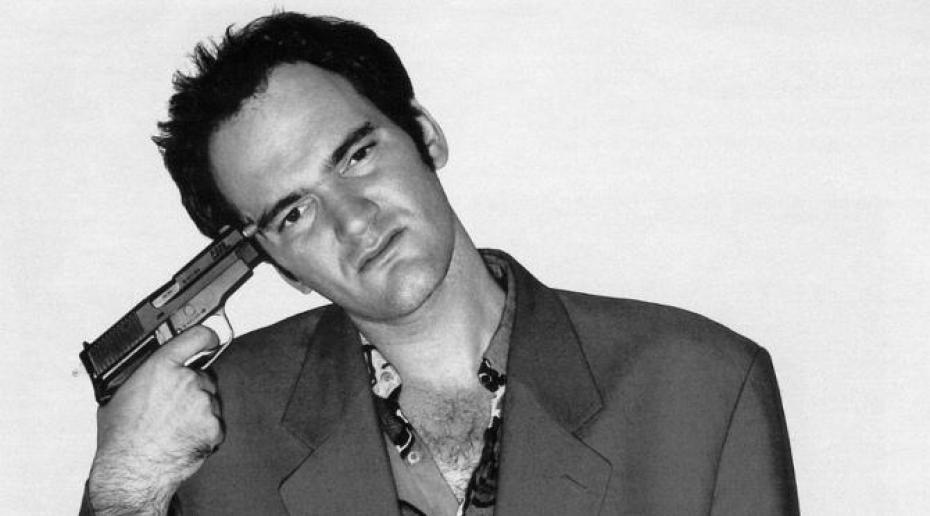

Quentin Tarantino
Biografía
Director, productor actor y guionista de cine estadounidense
"Tanto delante como detrás de la cámara, nunca pienso como un experto en la materia, sino como un miembro más de la audiencia" Quentin Tarantino
Nació el 27 de marzo de 1963 en Knoxville, Tennessee.
Hijo de Tony Tarantino, actor y músico aficionado, y de Connie McHugh, enfermera. Su progenitor es de ascendencia italiana y su madre irlandesa. Criado por una madre soltera que tuvo que abandonar sus estudios para poder mantenerle y sin apenas un recuerdo de su padre. Su padrastro fue Curt Zastoupil, músico. Tiene un hermanastro llamado Ron.
Cuando tenía cuatro años de edad, se trasladó a Torrance, sur de Los Ángeles, California y más tarde a Harbor City, Los Angeles, donde asistió a la Fleming Junior High School. Después ingresó a la Narbonne High School pero en su primer curso abandonó los estudios para con 15 años asistir a clases de actuación en el James Best Theater Company en Toluca Lake.
Asiduo de diferentes cines de barrio para ver las películas más sangrientas y violentas que podía encontrar en la cartelera, daba igual en qué extremo de Los Angeles estaba el cine, ciudad de la que nunca salió hasta entrada la veintena. Estudió drama durante seis años. Con veintidós trabajaba en un video llamado "Video Archives", en la playa de Manhattan, California. Aquí pasaba horas viendo, discutiendo y recomendando videos.
Tarantino conoció al productor Lawrence Bender en una fiesta de Hollywood y le animó a escribir un guión. Tarantino co-escribió y dirigió el filme My Best Friend's Birthday en 1987, que fue casi completamente destruido en un incendio del laboratorio durante la edición, pero el guion sirvió de base para "True Romance", que vendió por $50,000. Después escribió "From dusk till dawn" el primer guión que hizo de encargo. Un buen negocio que le permitió la posibilidad de filmar "Reservoir dogs".
Como recuerda, fue la petición de un equipo de efectos especiales que querían hacer un filme de horror que les sirviera como ejemplo para demostrar sus habilidades en este campo. Tarantino aceptó el encargo, pero, además de los 1500 dólares que cobró por la historia obtuvo los servicios gratuitos de este equipo para el maquillaje de su primer largo. Sin recursos para dirigir el proyecto, vendió el guión de "Asesinos natos", -que dirigiría Oliver Stone- lo que le permitió comenzar la producción de "Reservoir Dogs" (1992) de la cual fue director, guionista, y agente. En enero de 1992, fue proyectada en el Festival de Cine de Sundance teniendo un éxito inmediato.
El éxito de esta película le permitiría rodar "Pulp Fiction (1994) con la que ganó la Palma de Oro en Cannes y un Oscar para el mejor guión original. Desde entonces actuó en varias películas como "Desperado" (1995) dirigida por su amigo Robert Rodríguez, antes de volver a la producción con "Four Rooms" (1995), "Abierto hasta el amanecer" (1996) y Jackie Brown (1997) que también dirigió. Realiza Kill Bill, película épica de dos partes en la que contó con Uma Thurman y David Carradine. Debido a su duración (cuatro horas) se decidió separarla en dos partes, llamadas Volumen 1 y Volumen 2, lanzadas en octubre de 2003 y febrero de 2004 respectivamente.
Posteriormente rueda una película bélica, Inglourious Basterds, coprotagonizada por Brad Pitt y que estrenó en agosto del 2009, coproducción estadounidense-alemana de la que también escribió el guión con un estilo semejante al cine spaghetti western, mezclado con una influencia del cine bélico italiano de la década de 1960. También dirigió Death Proof, segunda parte de Grindhouse, en la que co-dirigía con Robert Rodríguez. El 13 de enero de 2013 fue el ganador de un Globo de Oro en la categoría 'Mejor guión de cine' por su trabajo en Django Desencadenado, película que narra la historia de la situación al sur de Estados Unidos un par de años antes de la Guerra Civil. El 24 de febrero de 2013, Quentin Tarantino ganó el Oscar al mejor guión original por Django Desencadenado.
Declarado admirador de Jean-Luc Godard, Jean-Pierre Melville, del italiano Sergio Leone y del maestro del cine de acción japonés John Woo, que sin duda influyeron en la definición de su propio estilo.
Ha mantenido relaciones sentimentales con la actriz Mira Sorvino, las directoras Allison Anders, y Sofia Coppola, la actriz Julie Dreyfus y las cómicas Kathy Griffin y Margaret Cho.